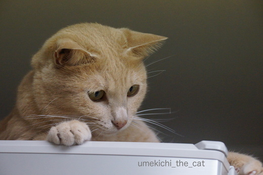
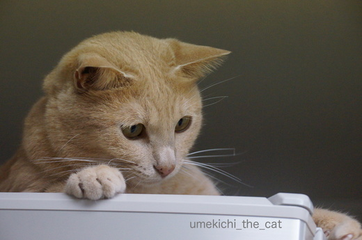

雨の日はアンニュイに [梅吉]
昨日、一昨日と大阪は雨が降ったりどんよりと曇ったり。
湿度が高くて不快なお天気が続きました。
湿気が苦手な札幌生まれ、札幌育ちの私・・・ツライ。

梅吉も冷蔵庫の上に引きこもっていつもの様に活発に動き回りません。
梅吉さんどうしたんですか？お加減でも悪いとか・・・
でも夜中に２回もおかーさんを起こして「おやつー！」とか
「なでてー！」とか元気いっぱい催促していましたよね。
いつまでも引きこもってないで遊びませんか？
ほらほら巨大猫じゃらし〜
（お掃除用のハンディワイパーです。そろそろ交換時期なの。
きちゃないのは気にせんといて！）
![[猫]](https://blog.ss-blog.jp/_images_e/101.gif) キロリ
キロリ

あ、釣れました(ﾉ≧▽≦)ﾉ

いったん遊びモードに入ったら興味津々巨大じゃらしを目で追います。

お耳の角度がわくわくを隠せませんね。

じ〜〜〜〜〜〜っ

爪がにょき〜ん。
エンジン全開となった様です。
幼い頃は暑い寒い乾燥湿気、全く関係なく走り回っていたのですが
最近は不快な日、雨の日はだら〜んとしていることが多くなって来ました。
これも大人になった証なのですよね。
もちろんアホみたいに走り回る梅吉も健在ですww
 ↑ガブッと一押し↑
↑ガブッと一押し↑
湿度が高くて不快なお天気が続きました。
湿気が苦手な札幌生まれ、札幌育ちの私・・・ツライ。

梅吉も冷蔵庫の上に引きこもっていつもの様に活発に動き回りません。
梅吉さんどうしたんですか？お加減でも悪いとか・・・
でも夜中に２回もおかーさんを起こして「おやつー！」とか
「なでてー！」とか元気いっぱい催促していましたよね。
いつまでも引きこもってないで遊びませんか？
ほらほら巨大猫じゃらし〜
（お掃除用のハンディワイパーです。そろそろ交換時期なの。
きちゃないのは気にせんといて！）

あ、釣れました(ﾉ≧▽≦)ﾉ

いったん遊びモードに入ったら興味津々巨大じゃらしを目で追います。

お耳の角度がわくわくを隠せませんね。


爪がにょき〜ん。
エンジン全開となった様です。
幼い頃は暑い寒い乾燥湿気、全く関係なく走り回っていたのですが
最近は不快な日、雨の日はだら〜んとしていることが多くなって来ました。
これも大人になった証なのですよね。
もちろんアホみたいに走り回る梅吉も健在ですww
2017-05-26 15:44
nice!(48)
コメント(18)

カフェオレ色の梅吉

梅吉 2023年8月10日 永眠


梅吉と出会った譲渡会

犬猫の理由なき殺処分ゼロ
妄想広告
UMEKICHI 光

爆発的に早い！
時々攻撃的！
Thanks to Mr.Boss365
爆発的に早い！
時々攻撃的！
Thanks to Mr.Boss365

同じく、お気に入りのオモチャを目の前でちらつかせても、ここ数日はガブガブ噛むだけで走り回りません。
こてつは湿度が高いのが一番ダメなようで、梅雨時から夏にかけて「あれ？大人になって落ち着いた？？」と思うのですが・・・^^;
by ゆきち (2017-05-26 17:51)
アホみたいに走り回るってツボ＾＾
うちの子達はアホみたいに走り回る姿を見なくなり寂しいよ
by みいこ (2017-05-26 18:44)
これから梅雨の時期・・・
ジメジメと嫌な季節になりますね(;^_^A
６月生まれの私ですが
６月は苦手です（笑
梅吉さん♪
ものすごく興味津々なおめめしてますね♪
by きぃ (2017-05-26 20:07)
ただ気温が高いだけならまだ何とか過ごせますが、
湿度が高いのはどうにも我慢が出来ませんね。
梅吉さん、狩人の血が騒いでますね。^^;
by yes_hama (2017-05-26 21:47)
梅吉さん『アホみたいに走り回る』とか言われていますよ〜
でも、アホみたいに走り回る梅吉さんも見てみたいですよ。
by kiki (2017-05-26 22:07)
ううう。。私は、ムシ暑〜い京都育ちですが、
じめじめが大嫌いです(+_;) とにかく蚊に刺されるからね。。
アンニュイな梅吉さんも素敵だけど、
やっぱり梅吉さんは、アホみたいにエキサイトしてくれないとにゃあ♡
by のらん (2017-05-27 07:48)
寄り目になると子猫ちゃんみたい〜(*^^*)
あれ？おひげ１本折れちゃってますね。
それすらカワイイ〜(^^)
by も〜 (2017-05-27 08:34)
ホントに、暑さより湿度がイヤですね～。低気圧もキラ～イ。札幌にピュンと行けたら良いですねー。爽やかな空気、ビールもうまーい♪
梅ちゃんは夜型になったのかな・・・ねむねむからのイカミミ、いいね！
by Ginger (2017-05-27 13:09)
あら、ちぃさん札幌生まれだったのですね～(#^^#)
気圧で調子悪くなる人いますね。ネコでもそうなるんだ。元気な梅吉君もいいですがアンニュイな梅吉くんもイケてますね(^o^)丿
by palpal (2017-05-27 17:01)
あぁ、こんな風に釣られる梅吉さんが可愛い〜( ^ω^ )
うちのおやじ猫は湿度が高いと床に落ちてじゃらしを振っても
「ハァ？何、それ？」とほぼ無視です(*_*)
仕方ないので、エアコンで湿度５５％設定にして湿度を下げてから
大御所に動いてもらってます(⌒-⌒; )
by ニッキー (2017-05-27 21:08)
湿度が高くて暑いとイヤーんですよね。
私も昔は汗ダラダラかくのが「気持ちいー」だったのに、今はグッタリ、いくらでも猫と寝れます。
猫は毛皮着てるから、もっと暑いでしょうね´д` ;
札幌生まれならなおさら(猫とヒトがごっちゃだ…
ここはもう逆にサウナスーツでも着込んで、汗かきまくるしかないですか(死ぬわ
by BillK-ko (2017-05-27 21:56)
札幌生まれなんですね！てっきり関西の方と思ってました。
梅吉くんもだんだん大人になってきたのねぇ。ハナも一人っ子になってホントに動きが少なくなりました。ベルが来た時は走り回ってるので、やっぱり1匹は寂しいかなと思い始めてます…。
それにしても、巨大ネコジャラシ、いいアイデアですね！
by ミミハナ (2017-05-28 08:48)
雨だと、やはり寝ている時間が長くなりますね。
ウチのノールとサラは立派な中年ですが、一日に数回はアホみたいに走り回ってますよ～(^_^;)
梅吉さんも参加しにおいで～！ (^o^)丿
by ひでぷに (2017-05-28 15:57)
ゆきちさん＞遊ぶの大好きなこてつくんも湿気には勝てませんか(･◇･)
アメショ系は毛の密度が濃くて立派な毛皮をお召しですものね。
「早く大人になって少し落ち着いて欲しいなぁ」と思ってはいましたが
いざそうなると物足りないし具合でも悪いんじゃないかと
気が気じゃないですよね。
早くまた元気に走り回る季節になって欲しい・・・って梅雨も夏もまだだったー( ꒪⌓꒪)
みいこさん＞うちは走り回らなく日がくるのか若干の疑問が・・・^^;
走り回らなくなったらまず病院！って思いそうですわww
きぃさん＞考えてみたらジメジメが得意な人なんて居そうもないですよね〜。
来月のきぃさんのお誕生日の日は梅雨の晴れ間
からりと晴れ上がった日になります様に！！
yes_hamaさん＞湿気は本当に厄介で・・・
国外で外気40℃を体験した事がありますが
木陰に入るとからりと気持ちよかったので全然平気でした。
以前タイに転勤になる方に「蒸し蒸し暑くて大変そうですね」とお話ししたら
「蒸し蒸し、夜も温度が下がらない、暑い期間が長い、
どれを取っても大阪の夏が一番過酷ですよ！」と言われちゃいましたよ(꒦ິ⌑꒦ີ)
kikiさん＞梅吉は基本アホなんですよ〜＾＾でも大阪だから褒め言葉！！
by ちぃ (2017-05-28 17:15)
のらんさん＞のらんさんは京女どしたか＾。＾
大阪も暑いけれど京都の蒸し暑さはまた独特ですよね〜。
あれは言葉では説明できません！
昨日、今日と暑いながらもカラリと過ごしやす勝ったので
梅吉のアホも復活です。
突然あたりのものを蹴散らしながら走り回り柱を駆け上がり
「うわぁ〜ん！うわぁ〜ん！！」と絶叫しておりました。
ちなみに我が家では「アホ」の「発作」で「あホッサ」と呼ぶ行動です(･◇･)
も〜さん＞普段は目つきが悪いので
たまにこんな子猫みたいな表情をされると飼い主はきゅんきゅんです＾＾
おヒゲはちょっとしたアクシデントであんな状態に・・・
２〜３本おかしかったのですがラスト一本の折れヒゲになりました。
お茶目な感じ、演出しているでしょう〜(≧▽≦)
Gingerさん＞大阪に移って3年くらいは本当に湿度が辛かったです。
（現在大阪Season6＾＾）
いまは慣れた訳ではありませんがしのぎ方を見つけつつある様に思います。
札幌の爽やかな空気の中でもビールも美味しいですが
蒸し暑い大阪の夏のビールもまたうま〜いっ(๑˃̵ᴗ˂̵)و
結構順応性あるみたいデス・・・・
palpalさん＞そうなの北の国からよ＾＾
アンニュイそうに見せておいて「お腹なでなで〜」とか
あちこち触りまくっていると
あっという間にカブカブ猫に変身するんですよ(•̀ἕ•́)
ニッキーさん＞大人になった様に見えておもちゃにつられるところが
まだまだお子ちゃまですよね〜＾＾。
ああ・・・これから猫様のためにエアコン２４時間フル稼働の季節が
やってきますね。
猫と一緒にエアコン生活しているせいで年々暑さに弱くなりつつあります^^;
by ちぃ (2017-05-28 20:22)
BillK-koさん＞暑くてだら〜んとしている割には
膝に乗ってきたり夜寝る時にべったりくっついてきたり。
「もぉ〜、暑いじゃないのよぉ〜」と言いながら
決して猫を移動したりしない飼い主・・・
猫も人間も不思議な生き物ですね(≧艸≦*)
あ、私だけ・・・・？
サウナスーツ、荒療治でいいねー。体、締まりそうだし！
でも痩せたり締まったりする前に脱水で熱中症やわ。
おばちゃんやからねＯ(≧▽≦)Ｏ
ミミハナさん＞大阪のおばちゃん臭を振りまいておりますが
北の国の人なのよー＾＾染まりやすいのかも(〃▽〃)
ミミさんの悲しい出来事はハナちゃんにも影響があるのですね・・・
お父さんお母さんお姉ちゃん方とはまた違った絆が
ミミさんハナさんの間にはあったのでしょうね・・・・
時期とタイミングを見て素敵な事が？あるかもしれないわね！
ひでぷにさん＞雨の時期は活動量が減る・・・・_φ(･_･
ということは太りやすくもあるのですね〜。
アホみたいに走り回るの応援しなくっちゃ！！
うん。遠征に行くかも＾＾梅吉の勢いすごいよ！！
by ちぃ (2017-05-28 20:41)
湿気はほんと嫌ですよねー。
札幌で暮らした期間よりも
東京で暮らしてる期間の方が長くなっちゃったけど
それでも湿気は慣れないわ～～
by リュカ (2017-05-29 09:50)
リュカさん＞私は札幌外に住んで6年目・・・
まだまだ修行が足りません〜( ；∀；)
不快なのもモチロンだけど髪が広がって
りゅうちぇるみたいになるの〜ww制御不能・・・・
by ちぃ (2017-05-29 16:49)